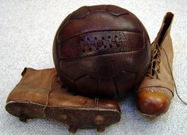
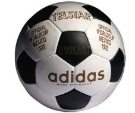
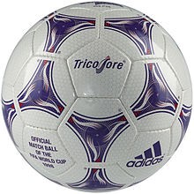
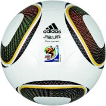
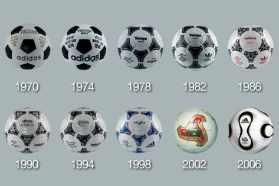

La historia moderna del fútbol, como actualmente se lo concibe, abarca casi unos 150 años de existencia. Comenzó en 1863, cuando en Inglaterra se separaron los caminos del "rugby-football" y del "association football" y se fundó la Asociación de Fútbol más antigua del mundo:la "Football Association".
Historia y origen del Balón de Fútbol
A lo largo de la historia ha habido diversas civilizaciones y pueblos que emplearon pelotas para diferentes juegos o deportes. Por ejemplo, el juego de pelota mesoamericano o pok ta’pok practicado por los mayas hace más de 3.000 años ya hacía uso de un esférico elaborado con savia del árbol hule. Y es que los balones eran parte del divertimento de muchas culturas.
No obstante, en lo relativo al fútbol como tal, es en Reino Unido donde en el siglo XIX comienza a popularizarse este deporte. La Asociación de Fútbol Inglés establece que las pelotas debían tener tener una circunferencia de 70 centímetros y pesar entre 350 y 400 gramos.
Los primeros balones de fútbol usados en esta época eran de cuero y llamados de tiento a causa del cordón que cerraba las costuras por fuera. En el interior había una vejiga de cerdo que se llenaba de heno, por ejemplo. No eran completamente esféricos, no botaban de manera uniforme, tenían una protuberancia en la zona del tiento que incluso podía dañar a los jugadores. Y además, si se mojaban resultaban mucho más pesados y difíciles de controlar.
Posteriormente, con el paso de las décadas, los balones evolucionarían y dichos cambios se apreciarían en los que eran empleados en cada Copa Mundial de Fútbol.
Una relación mucho más cercana entre el futbol y el balón tuvo su comienzo en 1970, cuando Adidas exhibió al planeta el primer balón oficial de un mundial. El Adidas Telstar fue un diseño totalmente renovado frente al balón usado hasta la época, similar al del balón actual de voleibol. El nuevo modelo utilizó un icosaedro truncado, con 20 hexágonos blancos y 12 pentágonos negros, dando origen a la que es la imagen mental clásica de un balón de futbol y a uno de sus nombres coloquiales, “pecosa”, basado en sus pentágonos negros sobre el color blanco. El nombre del modelo fue escogido en honor al satélite Telstar, lanzado al espacio en el año 1960 para las primeras trasmisiones televisivas entre Europa y América Latina.
El Telstar fue la base de los modelos utilizados en los mundiales siguientes. Se presentaron el Telstar Durlast de Alemania 1974, luego el Adidas Tango de 1978, el Tango España de 1982, el Azteca de México 1986, el Etruco Unico de Italia 90 y el Questra de USA 1994. Fue sólo hasta Francia 98 que se realizó otro cambio drástico en el balón de futbol. Por un lado, por primera vez se usaron tres colores, haciendo alusión a la bandera francesa. Por otro, se incluyó una capa de “espuma sintética”, un evolucionado material compacto compuesto de microburbujas rellenas de gas, cerradas individualmente y con óptima resistencia. La espuma sintética permitió que la durabilidad del balón fuera mayor, dándole más años de vida con capacidad de respuesta. A partir de entonces la sofisticación y la tecnología tomaron un rol cada vez más importante en el diseño y la producción del balón.
Fue así como en el mundial de Sudáfrica 2010 conocimos el veloz Jabulani, el esférico más rápido conocidoJabulani fue criticado por muchos jugadores, quienes alegaban que se movía en trayectorias extrañas sin necesidad de un golpe con efecto y parecía un balón de comprar en cualquier super mercado. La recepción de los jugadores motivó a la NASA a realizar un estudio del comportamiento y aerodinámica del balón, con el que concluirían que su velocidad era superior a los 72 kilómetros por hora. Tal velocidad es muy impredecible, por lo que los problemas sufridos por los porteros eran innegables.
Para garantizar el cumplimiento de tales condiciones, el máximo ente a nivel mundial en el futbol tiene tres estándares de calidad: aprobado por la FIFA, inspeccionado por la FIFA y balón internacional estándar. Todos los balones utilizados en competiciones oficiales tienen que incluir uno de estos sellos, de los cuales el primero es el más difícil de obtener. Para conseguir alguna de estas tres certificaciones, los balones deben superar una evaluación y análisis de laboratorio en donde se observara el peso, circunferencia, esfericidad, pérdida de presión, absorción de agua y rebote.

Evolucion de los balones de cada mundial